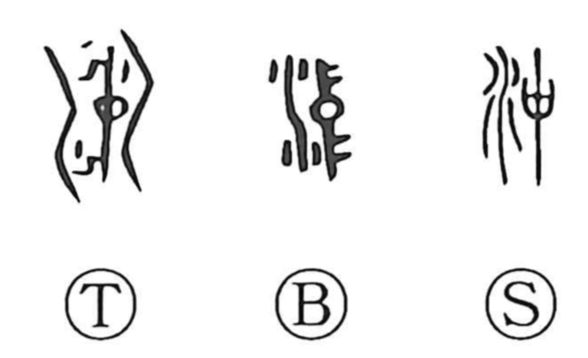

沖

Kun: oki | On: chuu
open sea ・ offshore ・ deep, calm water
Explanation
A phono-semantic character: the water element sets the scene, and 中 serves as the phonetic, yielding the On reading chuu. It conveys the deep, tranquil interior of water—the calm hidden within—and from this arise expressions such as 沖虚 (a relieved, openhearted mind), 沖淡 (a pure, desireless heart), and 沖天 (soaring high into the sky). In Japanese it designates the oki, the open water offshore, far from the shoreline.